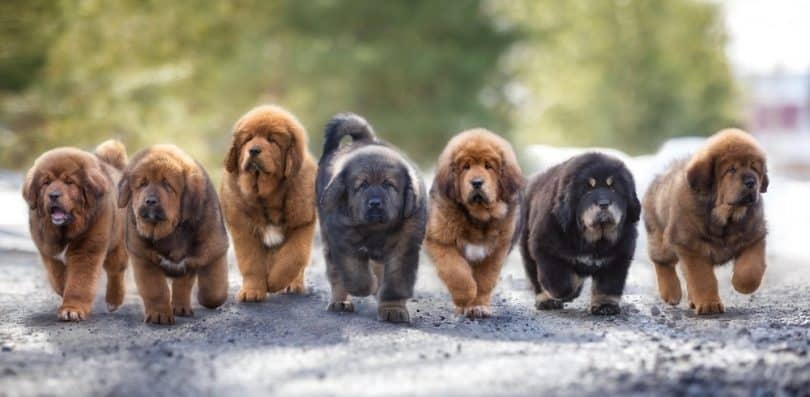

The Tibetan Mastiff is a large Tibetan dog breed. Its double coat is medium to long, subject to climate, and found in a wide variety of colors, including solid black, black and tan, various shades of red (from pale gold to deep red) and bluish-grey (dilute black), and sometimes with white markings around neck, chest and legs.

Did You Know? The name Tibetan Mastiff is a misnomer; the breed is not a true mastiff. The term mastiff was assigned by the Europeans who first came to Tibet because that name was used to refer to nearly all large dog breeds in the West.
The Tibetan mastiff is considered a primitive breed. It typically retains the hardiness which would be required for it to survive in Tibet, Ladakh and other high-altitude Himalayan regions. Instinctive behaviors, including canine pack behavior, contributed to the survival of the breed in harsh environments. It is one of the few primitive dog breeds that retains a single estrus per year instead of two, even at much lower altitudes and in much more temperate climates than its native climate. This characteristic is also found in wolves. Since its estrus usually takes place during late autumn, most Tibetan mastiff puppies are born between December and January.
The coat of a Tibetan mastiff lacks the unpleasant big-dog smell that affects many large breeds. The coat, whatever its length or color(s), should shed dirt and odors. Although the dogs shed somewhat throughout the year, there is generally one great molt in late winter or early spring and sometimes another, lesser molt in the late summer or early autumn. (Sterilization of the dog may dramatically affect the coat as to texture, density and shedding pattern.)
Tibetan mastiffs are shown under one standard in the West, but separated by the Indian breed standard into two varieties: Lion Head (smaller; exceptionally long hair from forehead to withers, creating a ruff or mane) and Tiger Head (larger; shorter hair).
A Tibetan mastiff is the subject of the 2011 animated adventure film "The Tibetan Dog."
In the 2018 animated television series, Craig of the Creek, the character Wildernessa rides a Tibetan mastiff, Cheesesticks.
The animated film Rock Dog featured two Tibetan mastiffs named “Bodi” and “Khampa".
The 2019 video game Indivisible features Lanshi, a Tibetan Mastiff, as a playable character.
In the early 20th century,the Prince of Wales, George, introduced a pair of Tibetan mastiffs, and enough of the breed were available in England in 1906 to be shown at the Crystal Palace show. However, during the war years, the breed lost favor and focus and nearly died out in England. The breed has been gaining in popularity worldwide since 1980. Although the breed is still considered somewhat uncommon, as more active breeders arose and produced adequate numbers of dogs, various registries and show organizations (FCI, AKC) began to recognize the breed. In 2008, the Tibetan mastiff competed for the first time in the Westminster Kennel Club Dog Show.
Since AKC recognition, the number of active breeders has skyrocketed, leading to over-breeding of puppies, many of which are highly inbred and of questionable quality. By 2015, due to excessive breeding and unsuitability of the breed as a pet in urban situations, prices in China for the best dogs had fallen to about $2,000, and both lower quality and crossbreed dogs were being abandoned. In 2011, a DNA study concluded that there was a genetic relationship between the Tibetan mastiff and the Great Pyrenees, Bernese Mountain Dog, Rottweiler and Saint Bernard, and that these large breed dogs are probably partially descended from the Tibetan mastiff. In 2014, a study added the Leonberger to the list of possible relatives.
Many breeders claim a life expectancy of 10-16 years, but these claims are unsubstantiated. Closely inbred lines often produce short-lived, unhealthy dogs. The breed has fewer genetic health problems than many breeds, but cases can be found of hypothyroidism, entropion, ectropion, distichiasis, skin problems including allergies, autoimmune problems including demodex, missing teeth, Crohn's Disease, and small ear canals with a tendency for infection. Canine inherited demyelinative neuropathy (CIDN), an inherited condition, appeared in one of the prominent lines of Tibetan mastiffs in the early 1980s.
Unfortunately, known carriers were bred extensively and are behind many lines still being actively bred. Because the mode of inheritance appears to be as a simple recessive, continued inbreeding can still produce affected puppies. Hypothyroidism is fairly common in Tibetan mastiffs, as it is in many large "northern" breeds. They should be tested periodically throughout their lives using a complete thyroid "panel". However, because the standard thyroid levels were established using domestic dog breeds, test results must be considered in the context of what is "normal" for the breed, not what is normal across all breeds. Many dogs of this breed will have "low" thyroid values, but no clinical symptoms. Vets and owners differ on the relative merits of medicating dogs which test "low", but are completely asymptomatic.